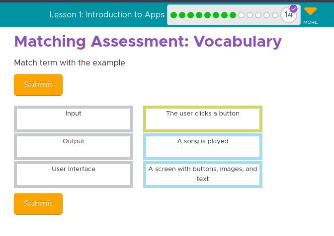

In Unit 3, we got introduced to App Design. We learned what functionality was and how to identify it in an app. Key vocabulary was input, output, user interface (UI), sequential programming, event-driven programming, documentation, comment, program, program statement, command runs, debugging, and pair programming. We learned how to properly communicate instructions to colleagues, how to develop easily understandable instructions, how to plan out the design of an app, sequential vs event-driven programming, and how to debug. The steps for debugging are to describe the problem, hunt for bugs, try solutions, and then document.
Matching Assessment: Vocabulary: Match term with the example --- 
Naming Element IDs: Why is it important for element IDs to have meaningful names? --- Element IDs should have meaningful names because it helps developers understand the purpose of each element, promotes consistency in coding practices, and enhances code readability and maintenance. By using descriptive and standardized names, developers can easily identify elements and ensure organized and manageable code.
Programming Languages vs. Natural Languages: What is the difference between a programming language and natural (every-day) language? --- Programming languages are used to give instructions to computers for tasks like software development, while natural languages are for human communication; natural languages have flexible rules, evolve over time, and are used for human interaction, whereas programming languages have strict syntax, are updated by humans with clear rules, and facilitate communication with computers.
Sequential vs. Event Driven Programs: What is the difference between a sequential program and an event-driven program? --- A sequential program isn't dependent on haptics, it runs whenever its code is debugged. However, an event-driven program is dependent on haptics and doesn't just happen after being debugged.
Reflecting on Programming: What is one thing you really enjoyed about today's activity?, Is there anything that you found confusing or need extra help with? --- One thing I really enjoyed about today's activity was how fast everything went. The only thing I needed help with was analyzing sound codes but I figured it out with my partner.